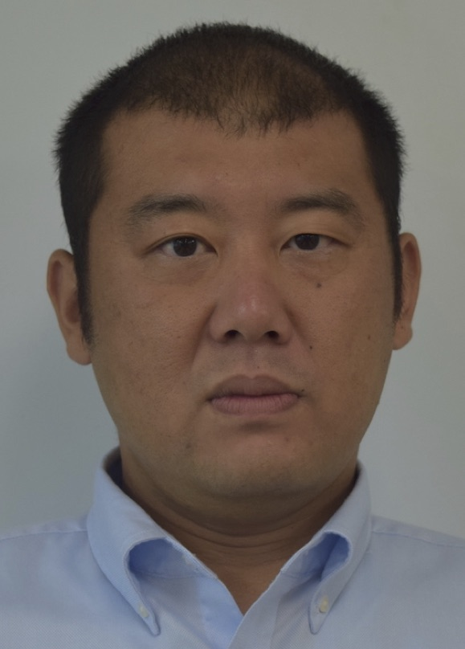

Committees
Organizing committee
- General co-chairs: Hiroyuki Okamura
- General co-chairs: Zhisheng Ye
- Program co-chairs: Mitsutaka Kimura
- Program co-chairs: Xufeng Zhao
- Publicity chairs: Taishin Nakamura
- Publicity chairs: Yuka Minamino
- Web chairs: Yoshinobu Tamura
- Web chairs: Lei Zhou
- Web chairs: Shuhei Ota
- Local organization chairs: Satoshi Mizutani
- Local organization chairs: Mitsuhiro Imaizumi

- Publication chairs: Shinji Inoue
- Publication chairs: Xiao Xiao
- Conference secretariats: Junjun Zheng
Steering Committee
- Chair: Yi-Kuei Lin (Taiwan)
- Lirong Cui (China)
- Ming Zuo (Canada)
- Sukjoo Bae (Korea)
- Sarah Marshall (New Zealand)
- Hiroyuki Okamura (Japan)
- Zhisheng Ye (Singapore)
Contact
APARM 2024 conference secretary
E-mail: yoshinobu.tamura.jp@gmail.com
Website: https://aparm2024-conf.github.io/info/